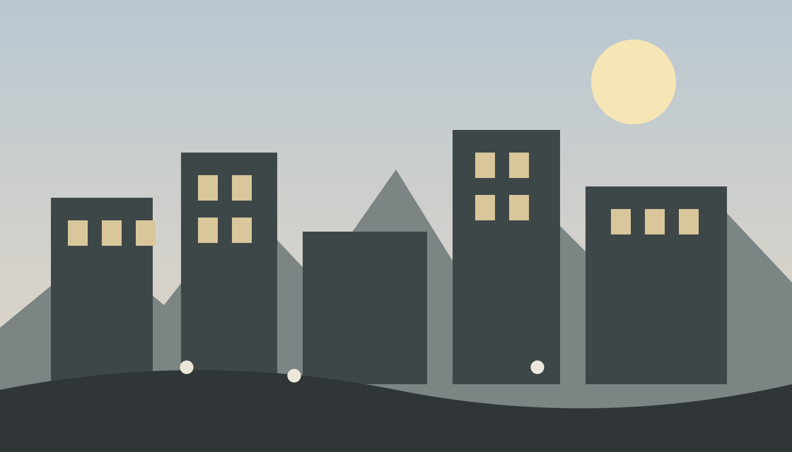
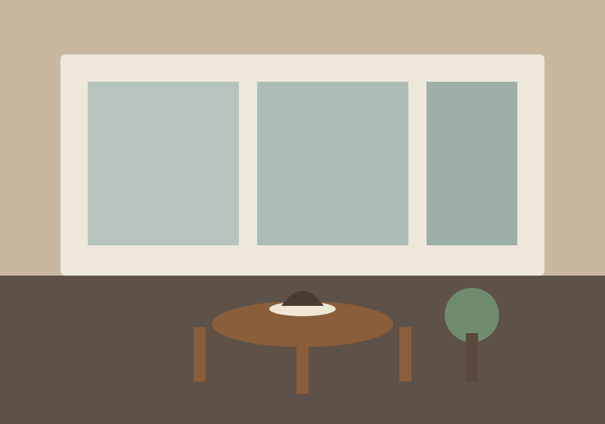

When concrete becomes a canvas for natural light
How openings, shadows and proportions can make a simple building feel surprisingly calm.
Read Note →Observations on streets, architecture, cafés, design and the small details that make cities feel alive.
A field note on shade, benches, storefronts, bicycles and the quiet design decisions that turn an ordinary road into a place worth staying.
Read the note →
How openings, shadows and proportions can make a simple building feel surprisingly calm.
Read Note →
Café CultureGood cafés are more than coffee. We look at light, sound, spacing and the ritual of staying awhile.
Read Note →Streetlights, late buses and empty sidewalks create a different rhythm after midnight.
Read Note →There is a difference between a street that moves people through a city and a street that invites people to stay. The second kind usually has small things in common: trees that create shade, storefronts at eye level, places to sit and enough space to walk without rushing.
None of these details needs to be spectacular. In fact, the strongest urban spaces often disappear into everyday life. A shaded bench becomes a meeting point. A wide footpath becomes a morning routine. A small café window becomes a landmark.
Good city design is therefore less about making a photograph look impressive and more about making ordinary moments easier. The best streets give people reasons to slow down.
An independent static publication exploring everyday city life. No sponsored rankings or travel packages — just thoughtful observations, practical design ideas and visual stories from the street.